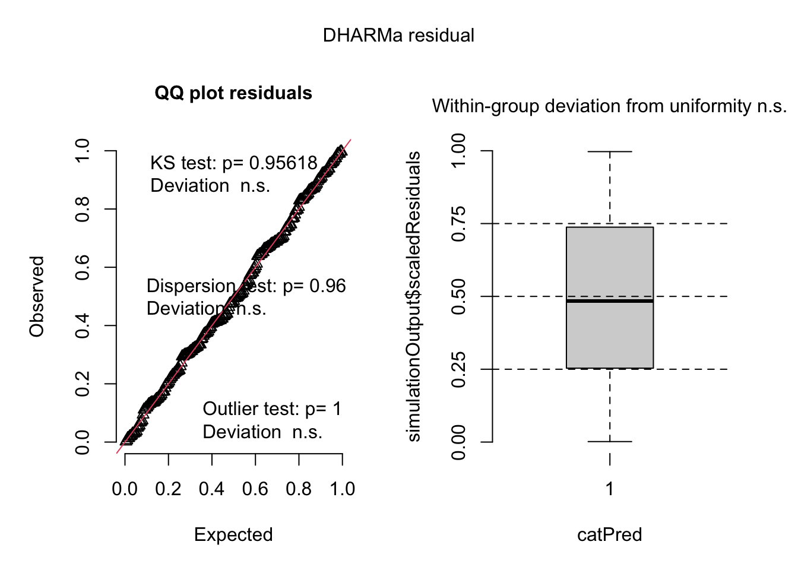
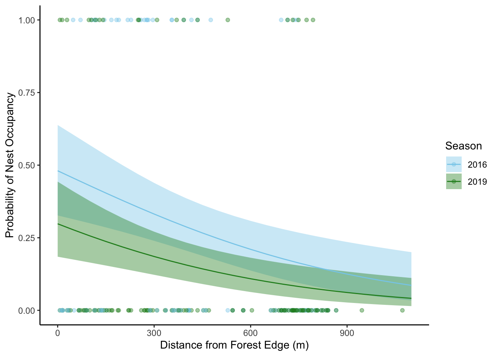

library(tidyverse)
library(janitor)
library(here)
library(gt)
library(flextable)
library(readxl)
library(MuMIn)
library(ggeffects)
library(DHARMa)
sst <- read.csv(here("data", "SST_update2023.csv")) # creating a dataframe "sst" for question 2 using SBC LTER dataset on sea surface temperatures.
nest_boxes <- read.csv(here("data", "occdist.csv")) #creating a dataframe "nest_boxes" for question 3 using the data provided from the studyENVS-193DS_spring-2025_final
Packages and Data
Question 1:Research writing
A: Transparent statistical methods
In part 1 of their results section, they made use of a Pearson’s r test, while in part 2 they used a one way Analysis of Variance (ANOVA).
B: More information needed
For part 2 of their results, the authors could run a Tukey’s Honestly Significant Difference test (Tukey’s HSD), as their ANOVA only reveals that there is a significant difference between average nitrogen loads (kg/year) in at at least two of the groups, which could be any pairing. A Tukey’s HSD test would reveal which groups’ average nitrogen are significantly different, providing more context in terms of what sources influence nitrogen runoff/pollution the most. Additionally, they could calculate the Eta squared, which is the effect size for an ANOVA. This would help to provide more context, as it would allow readers to understand how strong the effect of source is on average nitrogen loads.
C: Suggestions for rewriting
We found that there is a correlation between distance from headwater (km) and annual total nitrogen load (kg/year), (Pearson’s r test, r = value of correlation, R^2 = coefficient of determination, p = 0.03)
Additionally, we determined that there is a large difference ( n = Eta squared) between nitrogen pollution sources (urban land, atmospheric deposition, fertilizer, wastewater treatment, and grasslands) in average nitrogen load in kg/year (one-way ANOVA, f(degrees of freedom within groups, degrees of freedom between groups) = f-statistic, p = 0.02, alpha = significance level).
Question 2: Data visualization
A: Cleaning and summarizing
sst_clean <- sst |> #creating a new dataframe sst_clean from sst dataframe read above.
mutate(year = year(date)) |> #creating a new column "year" with only the year from the existing date column
mutate(month = month(date)) |> #creating a new column "month" with only the year from the existing date column
select(temp, year, month) |> #selecting to only include year, month, and temperature column
mutate(month = as_factor(month)) |> #making the months a factor
mutate(year = as_factor(year)) |> #making the year a factor
group_by(month, year) |>
summarize(
mean_monthly_sst = mean(temp, na.rm = TRUE) #creating a new column to summarize the mean monthly SST
) |>
ungroup() |> #ungrouping data
filter(year %in% c(2018, #filtering to only include years 2018-2019
2019,
2020,
2021,
2022,
2023 ))B: Visualize the data
ggplot(data = sst_clean, #starting with the sst_clean dataframe created in problem 2a
aes(x = month, #x axis in month
y = mean_monthly_sst, #y axis in mean monthly sea surface temperature
color = year, #coloring and grouping by year
group = year)) +
geom_line() + #adding the first layer which is a line chart
geom_point() +#adding the second layer which is a scatter plot
scale_x_discrete( #relabelling the Months from numbers to text
label = c(
"1" = "Jan",
"2" = "Feb",
"3" = "Mar",
"4" = "Apr",
"5" = "May",
"6" = "Jun",
"7" = "Jul",
"8" = "Aug",
"9" = "Sep",
"10" = "Oct",
"11" = "Nov",
"12" = "Dec"
)
) +
labs( x = "Month", #labeling the x axis "Month"
y = "Mean Monthly Sea Surface Temperature (C)", #labeling the y axis as mean monthly sea surface temp
color = "Year" #labeling the axis as year
) +
scale_color_manual(values = #adding a gradient of color manually. scale_color_gradient did not work with discrete data
c(
"2018" = "lightblue",
"2019" = "steelblue1",
"2019" = "steelblue2",
"2020" = "steelblue3",
"2021" = "steelblue",
"2022" = "steelblue4",
"2023" = "darkblue"
)) +
theme(
panel.grid = element_blank(), #removing gridlines
panel.background = element_blank(),#making background white
panel.border = element_rect(color = "black", fill = NA, linewidth = 1), #adding a pannel border
legend.position = c(0.10, 0.75) #moving legend to inside top left.
)
3: Data analysis
A: Response variable
The 1’s and 0’s in this data set indicate that the researchers observed a species of bird within the nest box. For example, a 1 could show they found a common sterling in one of their boxes, while 0’s for the other columns shows that the other species (swift parrot, tree martin) were not there.
B: Purpose of study
Swift parrots in the study were the target species for the nest boxes. The population of this species of the bird in the region is at risk due to deforestation and competition from other species, namely the other two birds featured in the study which are Common Starlings and Tree Martins. The nest boxes were deployed in order to help the population of the swift parrot in the form of habitat restoration.
C: Difference in “seasons”
The two seasons being 2016 and 2019, are two years where boxes were observed. In 2016 the boxes were newly deployed, and 3 years later in 2019 in order to compare species usage between freshly deployed boxes and ones that have been established for some time. In both seasons, observations occurred in November/December, which was during key life cycles periods for all 3 species including nest building, nestling, and incubation
D: Table of Models
| Model Number | Season | Distance to Forest Edge | Model Descriptions |
|---|---|---|---|
| 0 | No predictors (Null Model) | ||
| 1 | x | x | All predictors (Full Model) |
| 2 | x | Only season | |
| 3 | x | Only distance to forest edge |
E: Run the Models
# summarizing / wrangling the data
nest_boxes_clean <- nest_boxes |>
mutate(season = as_factor(season)) |> #making the seasons of 2016 and 2019 factors
clean_names() |> #cleaning column names
select(edge_distance, season, sp)
# model0 = null model
model0 <- glm(
sp ~ 1, # formula
data = nest_boxes_clean, # data frame
family = "binomial"
)
# model1 = both predictors
model1 <- glm(
sp ~ season + edge_distance,
data = nest_boxes_clean, # data frame
family = "binomial"
)
# model2 = only season
model2 <- glm(
sp ~ season,
data = nest_boxes_clean, # data frame
family = "binomial"
)
# model 3 = only distance from forest edge
model3 <- glm(
sp ~ edge_distance,
data = nest_boxes_clean, # data frame
family = "binomial"
)F: Check the Diagnostics
# checking diagnostics using simulated residuals from the DHARMa package
plot(
simulateResiduals(model0) #checking diagnostics for model 0
)
plot(
simulateResiduals(model1) #checking diagnostics for model 1
)
plot(
simulateResiduals(model2) #checking diagnostics for model 2
)
plot(
simulateResiduals(model3) #checking diagnostics for model 3
)
G: Select the best model
AICc( #using the AICc function from MuMIn package to determine Akaike’s Information Criterion (AIC) for all models
model0,
model1, #best model
model2,
model3
) |>
arrange(AICc) #arranging by value in order to determine best model, which is based on lowest score. df AICc
model1 3 226.3133
model3 2 229.6716
model2 2 236.3744
model0 1 238.8318Based on Akaike’s Information Criterion (AIC), the best model uses both distance from the forest edge and season (year) as predictors for swift parrot nest occupancy. This is because it has the lowest AIC relative to the other models.
H: Visualize the Model Predictions
model1_prediction <- ggpredict( # starting by creating a "dataframe" with model prediction values
model1,
terms = c("edge_distance", "season")) #using the two predictor variables
# ask question: there are three for each year, do I need to remove the column with species name?
# creating a plot
ggplot(data = nest_boxes_clean, # starting with the nest_boxes_clean data frame
aes(
x = edge_distance,
y = sp
)) +
geom_point(data = nest_boxes_clean, #starting with a scatterplot of raw data
aes(
color = season #coloring by season
),
alpha = 0.4) + #adding points and making them transparent with alpha
geom_ribbon(data = model1_prediction, #adding a ribbon using the 95% confidence intervals from the model prediction
aes(
x = x, #using x (distance) as x axis
y = predicted, #using predicted as y axis
ymin = conf.low, #upper confidence interval
ymax = conf.high, #lower confidence interval
fill = group), #coloring / sorting by season
alpha = 0.4 #making ribbons transparent
) +
geom_line(data = model1_prediction, #adding a line chart using prediction
aes(
x = x, #using x (distance) as x axis
y = predicted, #using predicted as y
color = group #coloring lines by season
)) +
labs(
x = "Distance from Forest Edge (m)", #updating names of axes and legend
y = "Probability of Nest Occupancy",
fill = "Season",
color = "Season"
) +
theme_classic() + #theme to remove gridlines
scale_color_manual( values =
c("2016" = "skyblue", #changing colors of the lines
"2019" = "forestgreen")) +
scale_fill_manual(values =
c("2016" = "skyblue", #changing colors of the ribbon
"2019" = "forestgreen"))
Figure 1: As the distance from the forest edge increases, the probability of a nest box being occupied goes down. Data from Stojanovic, D., Owens, G., Young, C. M., Alves, F., & Heinsohn, R. (2021). Do nest boxes breed the target species or its competitors? A case study of a critically endangered bird. Restoration Figure 1: As the distance from the forest edge increases, the probability of a nest box being occupied goes down.
Data from Stojanovic, D., Owens, G., Young, C. M., Alves, F., & Heinsohn, R. (2021). Do nest boxes breed the target species or its competitors? A case study of a critically endangered bird. Restoration Ecology, 29(3), e13319. https://doi.org/10.1111/rec.13319
Circles represent observations of distance of nest box from forest edge (m) and occupancy by swift parrots (0: not found, 1: found). Lines represent predicted nest box occupancy probability by swift parrots over distances from forest edge (m), shaded ribbons represent 95% confidence intervals. Different colors represent seasons (Blue: 2016, Green: 2019).
J: Calculate Model Predictions
#using ggpredict to make predictions for nest occupancy probability at specified distances from the forest edge
ggpredict(model1,
terms = c("edge_distance [0]", "season")) # predicted occupany probability at 0m# Predicted probabilities of sp
season: 2016
edge_distance | Predicted | 95% CI
--------------------------------------
0 | 0.48 | 0.33, 0.64
season: 2019
edge_distance | Predicted | 95% CI
--------------------------------------
0 | 0.30 | 0.18, 0.44ggpredict(model1,
terms = c("edge_distance [900]", "season")) # predicted occupancy probabiltiy at 900m# Predicted probabilities of sp
season: 2016
edge_distance | Predicted | 95% CI
--------------------------------------
900 | 0.12 | 0.06, 0.24
season: 2019
edge_distance | Predicted | 95% CI
--------------------------------------
900 | 0.06 | 0.03, 0.13K: Interpret your results
Across both seasons (2016 and 2019), nest boxes tend to have a lower probability of being occupied by swift parrots when the edge of the forest is further away (Fig. 1). At the forest edge (0m in distance), the probability of a nest box being occupied by a swift parrot is 0.48 (95% CI [0.33, 0.64]) and 0.31 (95% CI [0.18, 0.44]) in 2016 and 2019 respectively. When the forest edge is 900m away, the probability of a nest box being occupied by a swift parrot is 0.12 (95% CI [0.06, 0.24]) and 0.06 (95% CI [0.03, 0.13]) in 2016 and 2019. This may be due to the fact that other species such as the tree martin tend to use nest boxes further into the forest interior (Stojanovic et al., 2021), which increases competition for boxes farther away from the forest edge, thus decreasing the occupancy probability for swift parrots who are not as effective in competing against other species for habitat.
Question 4: Affective and exploratory visualizations
A: Comparing visualizations
In homework 3, I used jitterplots with added means to compare bike travel times between those going towards Campbell hall and those going towards home. In my affective visualization however, I chose to use lines representative of the distribution of histograms of the two groups to represent the data. In terms of similarities, both of them show the distribution of data points, such as what time ranges were more common, and where peaks occurred, modality, and others, although the distribution was more obvious in my affective visualization project. In terms of patterns between both visualizations, both displayed that the mean duration of the bike towards Campbell was shorter than the mean duration of the bike towards home. Additionally both visualizations showed bimodality in both directions, or having two peaks or clusters of data points. For example, the lines in the affective visualization had two peaks, while in the scatterplot data you could see two areas where times were grouped.
During week 9, I received feedback to flip the end point buildings horizontally (my apartment complex and Campbell hall) in order for them to be mirror images of each other. I incorporated this advice into my piece, which I think increased visual cohesion. Additionally, I was suggested to add elements of biking to the piece, which I did in the form of having two bikes traveling along the tops of the lines. Lastly, I received a suggestion to use the actual histogram (rather than a line showing the distribution) and place buildings in each of the bars. I attempted to do this, however many of the buildings and objects that I was attempting to highlight were shorter and wider, rather than the narrow and tall buildings which would be required to fill taller bars (with the exception of Stroke tower), and so I did not ultimately use this suggestion.